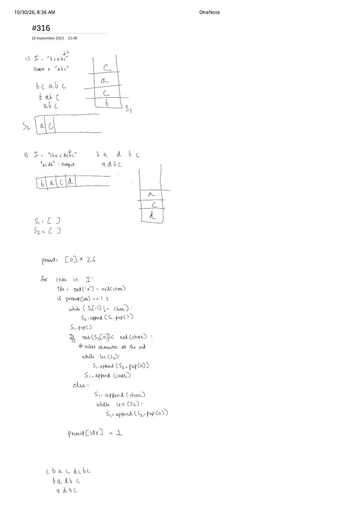

Bit Recurrences, Greedy Deduplication & Monotonic Stacks (LC 338, LC 316 & LC 456)
Expanded from handwritten competitive coding study notes (01_338_Counting_bits.pdf, 02_316.pdf, 03_456.pdf) · View original handwritten pages
1. LC 338: Counting Bits — Spotting $\mathcal{O}(1)$ DP from the 4-Bit Table
Given an integer $n$, return an array ans of length $n + 1$ where ans[i] is the number of 1 bits (popcount) in the binary representation of $i$, in linear $\mathcal{O}(n)$ time without calling built-in __builtin_popcount.
In 01_338_Counting_bits.pdf, writing out the 4-bit binary representations from $0$ (0000) through $15$ (1111) immediately exposes three equivalent $\mathcal{O}(1)$ DP recurrences:
| $[0..3]$ | $[4..7] = 4 + [0..3]$ | $[8..11] = 8 + [0..3]$ | $[12..15] = 8 + [4..7]$ |
|---|---|---|---|
0 → 0000 (0) | 4 → 0100 (1) | 8 → 1000 (1) | 12 → 1100 (2) |
1 → 0001 (1) | 5 → 0101 (2) | 9 → 1001 (2) | 13 → 1101 (3) |
2 → 0010 (1) | 6 → 0110 (2) | 10 → 1010 (2) | 14 → 1110 (3) |
3 → 0011 (2) | 7 → 0111 (3) | 11 → 1011 (3) | 15 → 1111 (4) |
- Right-shift + LSB recurrence (simplest): Dropping the least significant bit of $i$ gives $\lfloor i / 2 \rfloor = i \gg 1$ (already computed since $(i \gg 1) \lt i$ for $i \ge 1$), plus $1$ if $i$ is odd:
$$\text{dp}[i] = \text{dp}[i \gg 1] + (i \,\&\, 1)$$
- Power-of-2 MSB block copy: Every block $[2^k, 2^{k+1}-1]$ is a verbatim copy of $[0, 2^k - 1]$ with one leading
1bit added: $\text{dp}[i] = 1 + \text{dp}[i - \text{offset}]$. - Lowest-set-bit clear (Kernighan): Clearing the lowest set bit via $i \,\&\, (i - 1)$ removes exactly one
1bit: $\text{dp}[i] = \text{dp}[i \,\&\, (i - 1)] + 1$.
// LC 338: Counting Bits — O(n) Time, O(1) Auxiliary Space
class Solution {
public:
vector<int> countBits(int n) {
vector<int> dp(n + 1, 0);
for (int i = 1; i <= n; ++i) {
dp[i] = dp[i >> 1] + (i & 1);
}
return dp;
}
};2. LC 316: Remove Duplicate Letters — From Two-Stack Swap to Monotonic Stack
Given a lowercase string s, remove duplicate letters so every distinct letter appears once and only once, and the resulting subsequence is the lexicographically smallest among all valid results.
Understanding the Handwritten Scratchpad (02_316.pdf)
In 02_316.pdf, we trace "bcabc" → "abc" and "cbacdcbc" → "acdb" using a present[26] array and two stacks (S1, S2) that temporarily pop characters back to an earlier copy of char and compare ord(S2[0]) < ord(char) to decide whether to delete the earlier copy or keep it!
Why Delayed Deletion on Second Encounter Breaks on "cbacdcbc"
Notice what happens at the bottom of 02_316.pdf on "cbacdcbc": waiting until the duplicate 'c' arrives only inspects the character immediately following the old 'c' (S2[0]), missing the fact that when 'a' arrived at index 2, both 'b' and 'c' ahead of 'a' appeared again later in the string and should have been evicted immediately so 'a' could take index 0 (producing "acdb" instead of "adbc")!
Optimal Invariant: Eager Monotonic Increasing Stack + lastIdx
Precompute lastIdx[c] = final index where character c appears in s, and maintain a boolean inStack[26]:
- If incoming
c = s[i]is alreadyinStack[c], skip it! Why? Because the existing prefix in the stack is monotonically increasing aroundc; keeping the earliercahead of larger characters is already optimal. - Otherwise, while the stack is non-empty,
stack.back() > c(incoming char makes prefix lexicographically smaller), andlastIdx[stack.back()] > i(we can safely recover the popped character later!), popstack.back()and markinStack = false. - Push
cand markinStack[c] = true.
Dry Run on s = "cbacdcbc" (lastIdx: a:2, b:6, c:7, d:4)
i=0 ('c'): push 'c' $\to$ "c"i=1 ('b'): 'c' > 'b' & lastIdx['c']=7 > 1 $\implies$ pop 'c', push 'b' $\to$ "b"i=2 ('a'): 'b' > 'a' & lastIdx['b']=6 > 2 $\implies$ pop 'b', push 'a' $\to$ "a"i=3 ('c'): push 'c' $\to$ "ac"i=4 ('d'): push 'd' $\to$ "acd"i=5 ('c'): already inStack['c'] $\implies$ skip!i=6 ('b'): 'd' > 'b', but lastIdx['d']=4 < 6 (no future 'd'!) $\implies$ cannot pop 'd'! Push 'b' $\to$ "acdb"i=7 ('c'): already inStack['c'] $\implies$ skip $\implies$ Final Output: "acdb"!
// LC 316: Remove Duplicate Letters — Monotonic Stack + Last Index (O(n) Time, O(1) Space)
class Solution {
public:
string removeDuplicateLetters(string s) {
array<int, 26> lastIdx{};
for (int i = 0; i < (int)s.size(); ++i) {
lastIdx[s[i] - 'a'] = i;
}
array<bool, 26> inStack{};
string st; // Acts as our monotonic stack
for (int i = 0; i < (int)s.size(); ++i) {
char c = s[i];
if (inStack[c - 'a']) continue;
while (!st.empty() && st.back() > c && lastIdx[st.back() - 'a'] > i) {
inStack[st.back() - 'a'] = false;
st.pop_back();
}
st.push_back(c);
inStack[c - 'a'] = true;
}
return st;
}
};3. LC 456: 132 Pattern — From $\mathcal{O}(n^3)$ to $\mathcal{O}(n)$ Right-to-Left Stack
Given an integer array nums, return true if there exist indices $i \lt j \lt k$ such that $\text{nums}[i] \lt \text{nums}[k] \lt \text{nums}[j]$ (a 1–3–2 subsequence: low $\to$ peak $\to$ mid).
The Four-Stage Progression in 03_456.pdf (Pages 1–3)
- Trap 0 — Adjacent state flags fail: Testing
num > prevfollowed bynum < prevon[3, 1, 4, 2]only checks contiguous elements—and even if[1, 4, 2]happens to be contiguous there,[1, 0, 1, -4, -3]or[3, 5, 0, 3, 4]shows subsequence $\ne$ substring! - Stage 1 — Brute Force $\mathcal{O}(n^3)$: Three nested loops over $i \lt j \lt k$ testing $\text{nums}[i] \lt \text{nums}[k] \lt \text{nums}[j]$.
- Stage 2 — Greedy Prefix Minimum $\mathcal{O}(n^2)$ (Page 2): For any fixed peak $j$ and right element $k$, what is the best possible left choice $\text{nums}[i]$ ($i \lt j$)? Always the smallest element in $\text{nums}[0..j-1]$ (
min_from_left[j])! Precomputingmin_from_lefteliminates the $i$-loop immediately. - Stage 3 — Right-to-Left Monotonic Decreasing Stack $\mathcal{O}(n)$: Scan from right to left ($idx = n - 1 \to 0$) while maintaining:
st: candidate right elements, kept monotonically decreasing from bottom to top.third($\text{nums}[k]$, initialized toINT_MIN): the largest element ever popped fromstbecause a strictly greater peak $\text{nums}[j] \gt \text{nums}[k]$ stood to its left!
thirdis guaranteed to have some valid peak $\text{nums}[j] \gt \text{third}$ already processed to the right of our current index $i$, the moment we visit any index $i$ with $\text{nums}[i] \lt \text{third}$, the triple $(i, j, k)$ satisfies $\text{nums}[i] \lt \text{nums}[k] \lt \text{nums}[j]$ and we returntrue!
[-1, 3, 2, 0] from Page 2 of 03_456.pdf: Maximizing third = 2 when peak 3 pops 2 widens the acceptance target $(-\infty, \text{third})$ as much as possible for incoming left elements $\text{nums}[i]$.// LC 456: 132 Pattern — Right-to-Left Monotonic Decreasing Stack (O(n) Time, O(n) Space)
class Solution {
public:
bool find132pattern(vector<int>& nums) {
int n = nums.size();
if (n < 3) return false;
stack<int> st; // Monotone decreasing candidates for nums[j] / nums[k]
int third = INT_MIN; // Best valid nums[k] that already has a peak nums[j] > third to its left
for (int i = n - 1; i >= 0; --i) {
if (nums[i] < third) return true; // Found nums[i] < third (nums[k]) < peak (nums[j])!
while (!st.empty() && nums[i] > st.top()) {
third = st.top(); // nums[i] acts as peak '3', promoting st.top() to '2'!
st.pop();
}
st.push(nums[i]);
}
return false;
}
};From the Handwritten Notes
Expand the original handwritten pages below to inspect the exact derivations, dry runs, and annotations:
View original note — 01_338_Counting_bits.pdf (4-bit binary table 0 to 15)

01_338_Counting_bits.pdf: Writing out 4-bit binary numbers $0 \dots 15$ to visualize power-of-2 block repetition and shift-plus-LSB DP.View original note — 02_316.pdf (Stack traces on "bcabc" & "cbacdcbc")


02_316.pdf: Exploring stack manipulations on "bcabc" and "cbacdcbc" with character presence tracking.View original note — 03_456.pdf (Page 1: Subsequence vs. substring check, O(n^3) brute force & index-sorting idea)

03_456.pdf Page 1: Why adjacent comparison fails ("subsequence is asked not substring"), $\mathcal{O}(n^3)$ baseline, and sorting brainstorm.View original note — 03_456.pdf (Page 2: [-1, 3, 2, 0] trace & min_from_left prefix array)

03_456.pdf Page 2: Tracing [-1, 3, 2, 0] with min_from_left = [-1, -1, -1, -1] and right-to-left elimination.View original note — 03_456.pdf (Page 3: Concluding peak/valley sketch)

03_456.pdf Page 3: Geometric 1–3–2 slope sketch concluding the stack walkthrough.